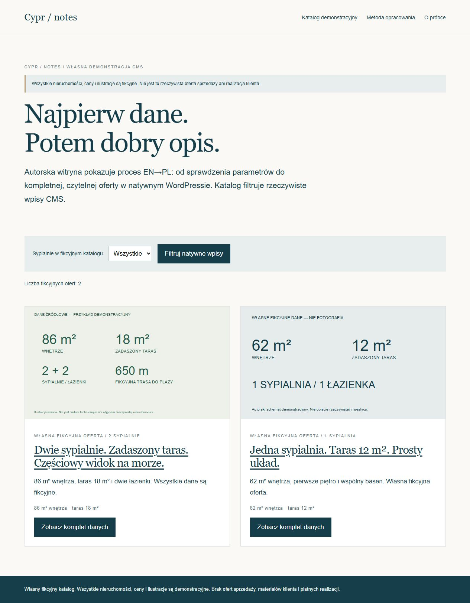
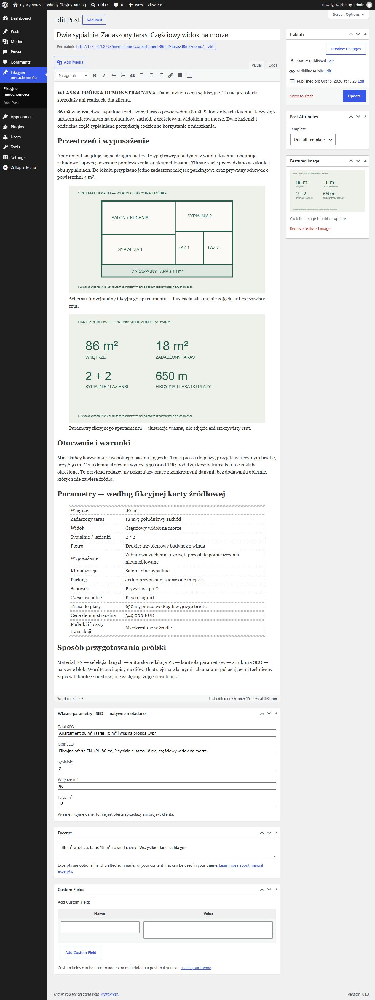

Cypr / notes
Samodzielna witryna redakcyjna z własną stroną główną, katalogiem, filtrem według liczby sypialni i dwiema fikcyjnymi ofertami w natywnym CMS.
To rzeczywiście wykonana autorska demonstracja z własną bazą, konfiguracją i natywnym panelem. Nie jest płatnym zleceniem klienta. Ta strona jest statycznym portfolio: zrzuty i eksporty nie udają działającego backendu.
Co rzeczywiście działa
- Własny typ wpisu cy_property, rzeczywiste metadane i biblioteka mediów WordPress.
- Katalog wykonuje WP_Query; filtry 0/1/2/3 sypialnie zwracają 2/1/1/0 wpisów.
- Opisy, parametry, SEO i ilustracje są odczytywane z bazy; edycja przez natywny Classic/TinyMCE.
- Osobny motyw, baza i adres serwera. Nie jest dodatkowym artykułem sklepu ani zamrożonej próbki Cypr.
Pomiar Lighthouse 13.5.0
| Tryb | Wydajność | Dostępność | Dobre praktyki | SEO |
|---|---|---|---|---|
| mobile | 100 | 95 | 100 | 69 |
| desktop | 100 | 95 | 100 | 69 |
Rzeczywisty test lokalnego serwera, oficjalny Lighthouse i Chrome. To nie jest wynik produkcji klienta ani terenowy pomiar Google PSI. Demonstracje celowo mają noindex; ten warunek obniża ocenę SEO. Wynik nie gwarantuje 90+ na nieznanym hostingu.
Pełny raport mobile HTML · JSON mobile · Raport desktop · Dowód natywnego działania · Eksport rzeczywistego CMS
Rzeczywiste strony i panel


Granice demonstracji
- Wszystkie dane, ceny i ilustracje są fikcyjne. Grafiki są schematami, nie fotografiami nieruchomości.
- Nie ma prawdziwej inwestycji, materiałów dewelopera, wyników sprzedaży ani płatnego case study.